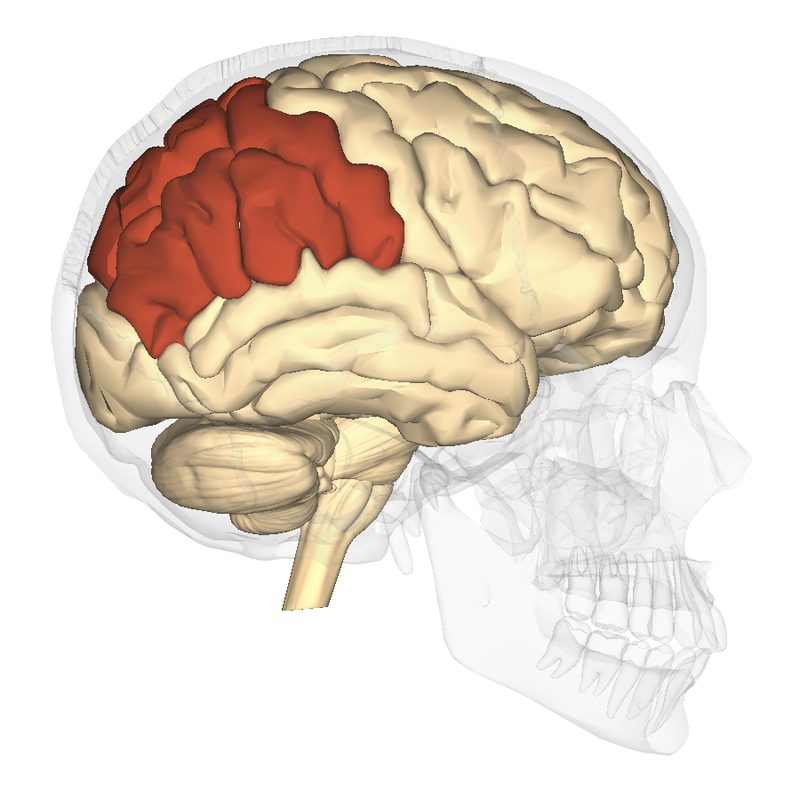

두정엽 (Parietal Lobe)

쉽게 풀면
두정엽은 대뇌겉질에서 정수리 쪽부터 뒤통수 방향으로 이어지는 영역으로, 크게 앞부분과 뒷부분이 서로 다른 일을 한다.
앞쪽(중심고랑 바로 뒤)에는 손·얼굴·발 등에서 오는 촉각·온도·통증 신호를 받아들이는 일차체성감각피질이 있고, 그 뒤쪽으로 이어지는 넓은 영역(후방두정피질)은 이렇게 들어온 촉각 정보에 시각·청각 정보까지 한데 모아 "지금 내 몸이 어디에 있고, 물건이 나로부터 얼마나 떨어져 있는지" 같은 공간 감각을 만들어낸다.
예를 들어 컵을 향해 손을 뻗을 때 눈으로 본 컵의 위치와 손의 촉감을 실시간으로 맞춰주는 것도 두정엽의 역할이다. 이 부위가 손상되면 시야 한쪽에 있는 물체나 심지어 자기 몸의 한쪽을 알아차리지 못하는 편측무시 증상이 나타나기도 한다.
왜 중요한가
두정엽은 여러 감각 양식을 통합해 공간 표상을 만들어내는 허브 역할을 하기 때문에, 시각-운동 협응, 주의, 신체 인식 등 폭넓은 인지 기능 연구에서 핵심적으로 다뤄진다. 또한 편측무시나 게르스트만 증후군처럼 두정엽 손상과 관련된 임상 증상들은 뇌와 행동의 관계를 이해하는 대표적인 사례로 신경심리학 교육과 연구에서 자주 인용된다. 최근에는 뇌-기계 인터페이스 연구에서도 두정엽의 공간 부호화 신호를 활용하려는 시도가 이어지고 있다.
어디에 있고 어떻게 생겼나
- 두정엽은 대뇌 위쪽 뒷부분의 엽이다. 앞쪽은 전두엽과 중심구로, 뒤쪽은 후두엽과, 아래쪽은 측두엽과 외측구로 경계를 이룬다.
- 중심후이랑은 일차체성감각피질이 있는 곳이며, 그 뒤쪽은 두정내구를 경계로 상두정소엽과 하두정소엽으로 나뉜다. 하두정소엽에는 연상회(supramarginal gyrus)와 모이랑(각회)가 있다.
- 안쪽 면에는 쐐기앞소엽이 있다.
중심후이랑은 브로드만 영역 3·1·2 에 해당하고, 상두정소엽은 영역 5와 7, 하두정소엽은 영역 39와 40에 해당한다. 두정내구는 MIP·LIP·VIP·AIP 등 기능이 다른 하위 영역으로 나뉘며, 두정엽과 후두엽의 경계는 두정후두구이다.
맡은 기능
- 체성감각: 중심후이랑에 몸 부위별 지도가 있다. 전기 자극 실험으로 처음 지도가 그려졌다(Penfield & Boldrey, 1937).
- 감각-운동 통합: 보이는 것의 위치를 몸의 좌표로 바꾸어 손을 뻗거나 눈을 움직이는 데 쓰는 정보를 만든다(Andersen & Buneo, 2002). 시각 정보의 배측 경로가 이곳으로 향한다.
- 주의와 공간: 특히 오른쪽 두정엽이 공간 주의에 중요하며, 손상되면 편측무시가 나타날 수 있다(Behrmann 등, 2004).
- 수 처리: 두정내구 부근이 수량 표상과 계산에 관여한다는 영상 연구가 있다(Culham & Kanwisher, 2001).
- 왼쪽 하두정소엽 손상 후 손가락 인식 이상, 좌우 혼동, 쓰기·계산 장애가 함께 나타나는 증후군을 게르스트만 증후군이라 부르지만, 증상 묶음의 독립성에 대해서는 논란이 있다.
손상 증상: 양쪽 두정엽 손상은 발린트 증후군과 관련된다.
우세 반구 손상에서 계산불능, 쓰기불능, 손가락실인, 좌우 지남력 장애가 함께 나타나는 것이 게르스트만 증후군이고, 입체 형태를 촉각만으로 알아보지 못하는 입체인지불능(astereognosis)도 두정엽 손상 증상으로 기술된다.
연구에서 다루는 방식
- 뇌 영상: fMRI로 과제 중 두정내구·하두정소엽 활동을 보고, 구조 MRI로 피질 두께와 부피를 잰다.
- EEG 연구: 두정 전극(P3, Pz, P4 등)은 주의와 P300 같은 사건관련전위 연구에서 자주 쓰인다(EEG). 전극 위치는 해당 뇌 영역과 정확히 일치하지 않는다.
- 환자 연구: 손상 부위와 증상(편측무시, 시각실조, 구성실행증)의 관계를 본다.
- 논문에서 주의할 점: “두정엽”은 넓은 영역이다. 일차체성감각피질, 상두정소엽, 하두정소엽, 두정내구 중 어디인지를 명시해야 기능 주장이 구체적이 된다.
논문에서는 이렇게 쓰입니다
실제 논문에서
국내 학술지 논문에서 이 용어가 쓰인 문장을 그대로 옮겼다. 제목·학술지·연도와 원문 링크를 함께 적었다.
“이 중에서 수 감각과 시공간적 능력은 두정엽(parietal lobe)을 기반으로 한다.”
수학적 사고력에 관한 인지신경학적 연구 개관, 인지과학, 2016 · KCI 한국학술지인용색인 · 원문 보기 ↗
“첫째, 공간 시각화와 심적 회전 요소는 주로 두정엽의 활성을 필요로 했으며, 공간 방향화 요소는 전두엽의 활성을 필요로 했다.”
공간능력에 대한 신경과학적 모델 개발 및 빛과 그림자 문제 해결 과정에의 적용, 한국과학교육학회지, 2021 · KCI 한국학술지인용색인 · 원문 보기 ↗
“왼쪽 전두엽은 정보의 통합과 선택, 왼쪽 측두엽과 두정엽은 기억의 저장과 인출, 전대상이랑은 주의집중에 관여한다.”
과학 분야 비유 생성 사고과정에서 나타나는 뇌활동성 분석, 영재교육연구, 2021 · KCI 한국학술지인용색인 · 원문 보기 ↗
예시 문장
아래 예문은 용어의 쓰임을 보이려고 만든 것으로, 실제 논문 문장이 아니다.
이 문장은 실험 참가자가 공간 정보를 머릿속에 유지하는 과제를 하는 동안 두정엽 일부가 더 활발하게 활동했고, 이 차이가 우연히 나타난 것으로 보기 어렵다는 뜻이다. 두정엽은 공간 지각, 주의, 감각 통합을 다루는 연구에서 자주 관찰 대상이 된다.
임상신경심리학에서 두정엽 손상이 공간 주의 장애로 이어지는 사례를 보여주는 예문이다.
동물 전기생리학 연구에서 두정엽이 시각-운동 협응에 관여함을 보여주는 예문이다.
조금 더 깊게 보면
두정엽 내에서도 세부 영역마다 기능이 나뉘는 것으로 알려져 있는데, 예를 들어 후방두정피질의 일부는 눈이나 손의 움직임을 계획하는 데, 다른 일부는 여러 감각 정보를 통합해 신체와 주변 공간의 관계를 표상하는 데 관여한다. 논문에서는 이런 세부 영역을 브로드만 영역 번호나 기능적 명칭(예: 두정간고랑 주변 영역)으로 구분해 언급하는 경우가 많으므로, 단순히 "두정엽"이라고만 뭉뚱그리기보다 어떤 하위 영역을 가리키는지 확인하며 읽는 것이 이해에 도움이 된다.
주의할 점
두정엽을 일차체성감각피질과 같은 것으로 오해하기 쉽지만, 일차체성감각피질은 두정엽의 앞쪽 일부에 불과하다. 두정엽 전체는 그보다 훨씬 넓어서, 촉각 처리뿐 아니라 공간 지각·주의·감각 통합 같은 더 폭넓은 기능까지 포함한다는 점을 구분해야 한다.
헷갈리기 쉬운 용어
| 용어 | 범위 | 두정엽과의 관계 |
|---|---|---|
| 두정엽 | 중심구 뒤, 후두엽 앞, 외측구 위 | 대뇌 엽 전체 |
| 일차체성감각피질 | 중심후이랑 | 두정엽의 앞쪽 일부 |
| 하두정소엽 | 두정내구 아래쪽, 연상회·모이랑 포함 | 두정엽의 고차 연합 영역 |
| 모이랑(각회) | 하두정소엽의 뒤쪽 | 언어·의미·수 처리에 관여 |
참고 문헌
- Penfield, W., & Boldrey, E. (1937). Somatic motor and sensory representation in the cerebral cortex of man as studied by electrical stimulation. Brain, 60(4), 389–443.
- Culham, J. C., & Kanwisher, N. G. (2001). Neuroimaging of cognitive functions in human parietal cortex. Current Opinion in Neurobiology, 11(2), 157–163.
- Andersen, R. A., & Buneo, C. A. (2002). Intentional maps in posterior parietal cortex. Annual Review of Neuroscience, 25, 189–220.
- Behrmann, M., Geng, J. J., & Shomstein, S. (2004). Parietal cortex and attention. Current Opinion in Neurobiology, 14(2), 212–217.
- Wikipedia contributors. (n.d.). Parietal lobe. In Wikipedia, The Free Encyclopedia.
- Wikipedia contributors. (n.d.). Parietal lobe: Sulci and gyri; Clinical significance. In Wikipedia, The Free Encyclopedia.
표의 기준값은 위 문헌에 따른 관례이고, 분야·학술지마다 기준이 다를 수 있다.